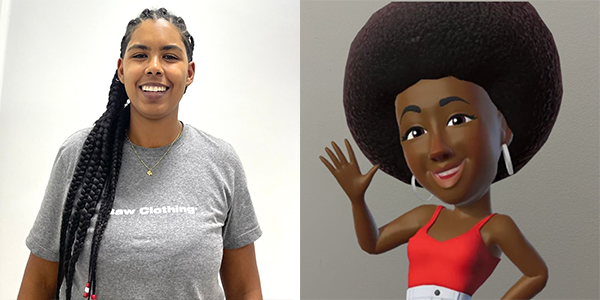
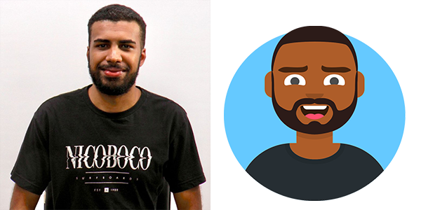
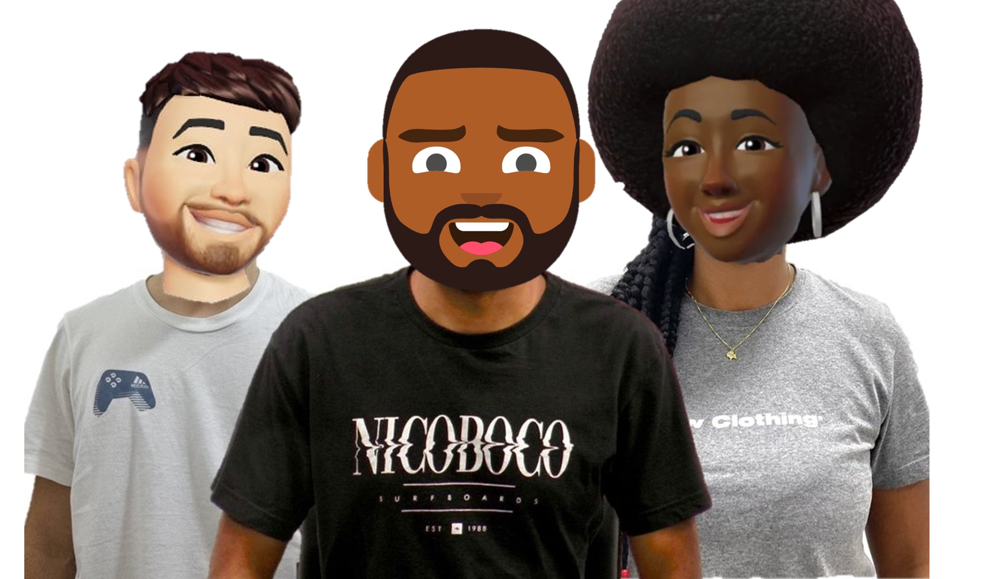
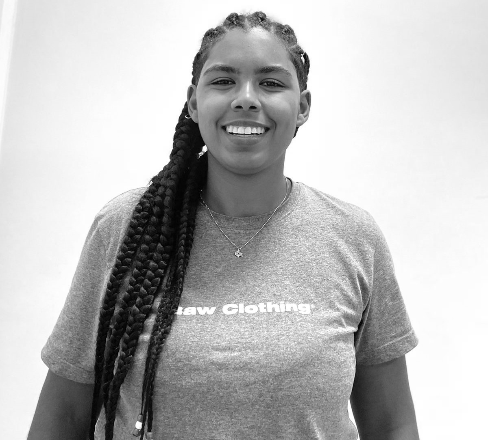
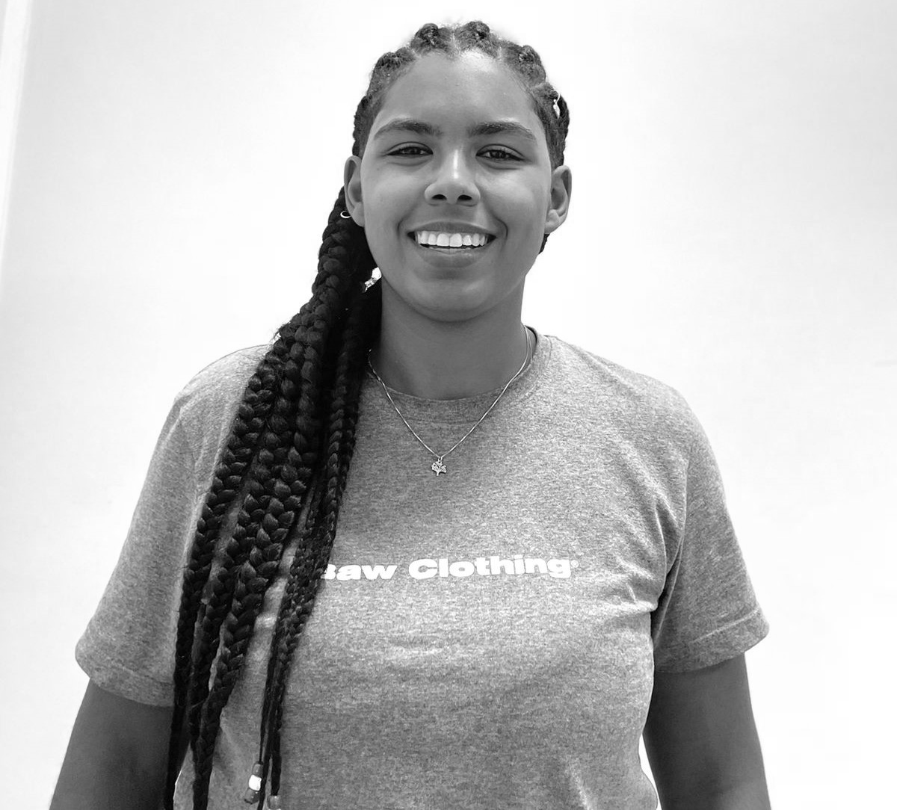
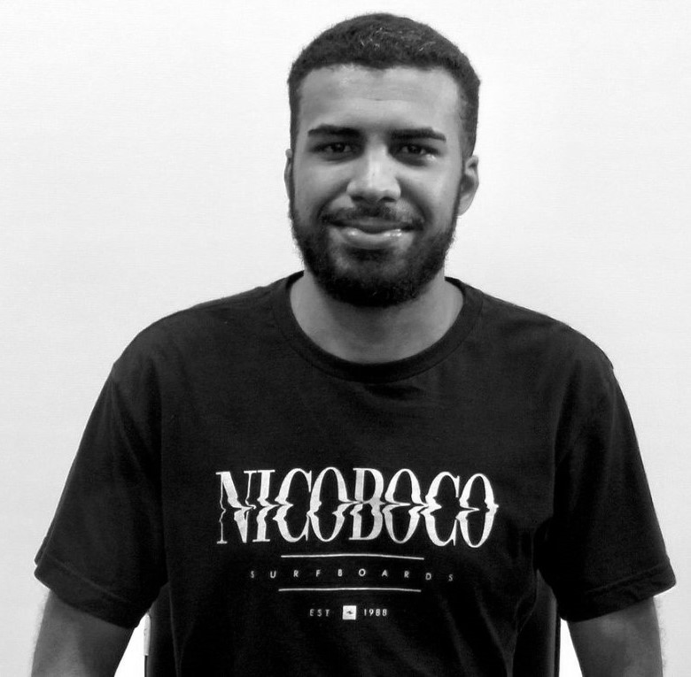
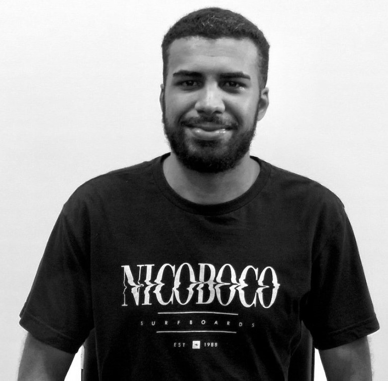
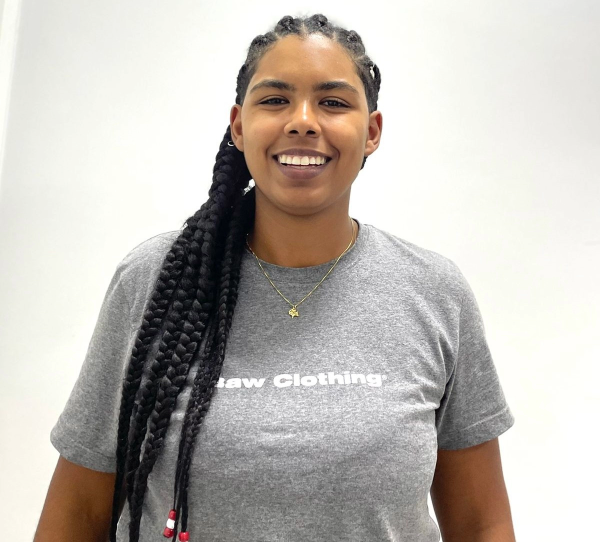
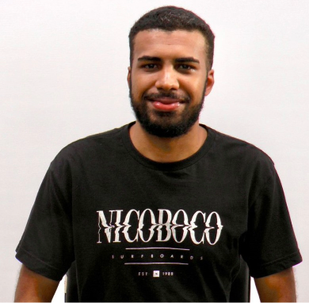

LAB 2: Aquisição de Imagem e Vídeo
Objetivos: Capturar e visualizar imagens e alterar a resolução delas; Gravar Vídeos e ajustar a iluminação e a filmadora
Áudio Descrição:
Introdução A presente página tem como obejetivo documentar e demonstrar os procedimentos realizados na captura de imagens e vídeos e as manipulações realizadas com ambos. Alguns dos procedimentos realizados foram: captura e imagem e vídeo, mudança de resolução, mudança de cor, monyagens, etc.
G Metodologia e Procedimentos:
Para realizar as montagens, será utilizada ferramenta de remoção de fundo do Microsoft PowerPoint para subtrair o fundo de cada foto individual, então colocadas, parcialmente sobrepostas, em um mesmo fundo branco e salvas em uma única imagem. A mesma ferramenta foi utilizada na Montagem com os avatares.
Na etapa de redução das resoluções das imagens, será realizada uma redução de 50% da resolução com o uso do software Adobe Express. O mesmo software será utilzado para alterar o esquema de cores das imagens para preto e branco.
Para a gravação do vídeo com a narração, será utilizado o software OBS. E para o vídeo com mudanças rápidas de movimentos, foi utilizado o celular Samsung S21. A resolução original de ambos os vídeos é de 1920x1080.
Para a redução da resolução dos vídeos, será utilizado o software Da Vinci Resolve. Para cada vídeo, serão feitas 3 renderizações: uma com a resolução original (1920x1080), uma com a resolução em 50% (960x540) e outra com a resolução em 25% (480x270). Dessa forma, garantimos que os três vídeos possuem o mesmo Codec, o que possibilitará a analise da influência da mudança da resolução no tamanho do arquivo.
A Cada integrante deve bater uma foto individual, de qualidade, para compor uma
montagem 1 do tipo foto/avatar


B Se possível, bater uma foto geral com TODOS os integrantes

C Fazer uma segunda foto-montagem, substituindo cada um na foto geral de todos
por seus respectivos “Avatares”

D vídeo com uma narração
I) explicando a página web do laboratório,
II) introduzindo a disciplina,
III) apresentando os integrantes do grupo,
IV) um geral das atividades a serem postadas na página.
E Um segundo vídeo com mudanças rápidas de movimento, para teste de codificação futura.
F Introdução (objetivos e teoria) futura;
G Metodologia e Procedimentos:
Para realizar as montagens, será utilizada ferramenta de remoção de fundo do Microsoft PowerPoint para subtrair o fundo de cada foto individual, então colocadas, parcialmente sobrepostas, em um mesmo fundo branco e salvas em uma única imagem. A mesma ferramenta foi utilizada na Montagem com os avatares.
Na etapa de redução das resoluções das imagens, será realizada uma redução de 50% da resolução com o uso do software Adobe Express. O mesmo software será utilzado para alterar o esquema de cores das imagens para preto e branco.
Para a gravação do vídeo com a narração, será utilizado o software OBS. E para o vídeo com mudanças rápidas de movimentos, foi utilizado o celular Samsung S21. A resolução original de ambos os vídeos é de 1920x1080.
Para a redução da resolução dos vídeos, será utilizado o software Da Vinci Resolve. Para cada vídeo, serão feitas 3 renderizações: uma com a resolução original (1920x1080), uma com a resolução em 50% (960x540) e outra com a resolução em 25% (480x270). Dessa forma, garantimos que os três vídeos possuem o mesmo Codec, o que possibilitará a analise da influência da mudança da resolução no tamanho do arquivo.
H Resultados e Análises:
Foi feito uma análise comparando o tamanho dos vídeos que tiveram sua resolução diminuída com o tamanho do vídeo original. Para o vídeo com a resolução reduzida para 50% da resolução original, houve uma redução de 60% no tamanho do arquivo. Enquanto que, para o vídeo com a resolução reduzida para 25%, a redução no tamanho do arquivo foi de 90%.
Na redução da resolução das imagens, também notou-se uma redução quase proporcional na redução do tamanho do arquivo. Para a foto da Milena, a redução no tamanho foi de 47%, enquanto nas fotos do José e do Henrique, chegou próximo à 60%.
Quanto a mudança na escala de cores, notou-se uma redução de aproximadamente 15% no tamanho do arquivo após alterar sua palheta de cores para Tons de Cinza.
I Conclusões;
H Conclusões:
Os procedimentos realizados, de acordo com o roteiro fornecido pelo Professor, demonstram que a redução da resolução de fotos e vídeos influenciam diretamente na redução do tamanho dos arquivos. Além disso, alterar a palheta de cores de uma foto colorida para tons de cinza também contribuem com a redução do tamanho do arquivo, dado que as informações sobre cores (RGB) de cada pixel é descartada.
J Referencias Bibliográficas;
K Descrever todos os procedimentos realizados;
Roteiro da atividade - toda atividade foi realizada com base nos procedimentos descrinos do PDF abaixo:
L Apresentar as imagens originais e as versões em P&B delas;
 

 

M Apresentar as imagens com duas resoluções diferentes cada;


N Apresentar os vídeos com mudança de resolução, 25% e 50% dos originais;
Vídeos com resolução original
Vídeos com 50% da resolução original
Vídeos com 25% da resolução original
O Integrar SEMPRE com uma Áudio Descrição do que está sendo mostrado no relatório em HTML!s;